Epictia
The genus Epictia (family Leptotyphlopidae) has 44 living species in SnakeList (none venomous), recorded in 21 countries (+1 territory).
- 44living species
- 44non-venomous
- 21countries
About the genus
A genus of the family Leptotyphlopidae (thread snakes).
Species
Showing 44 species
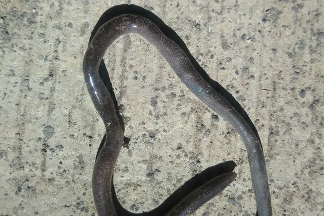
Bakewell's Blind SnakeEpictia bakewelli Black Blind Snake (ater)Epictia ater
Black Blind Snake (ater)Epictia ater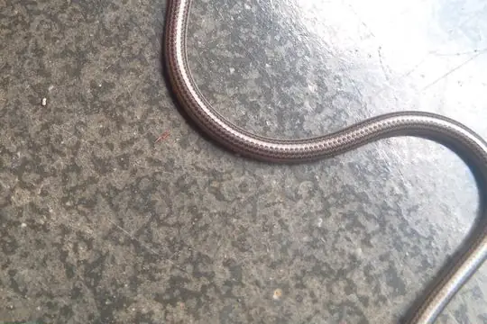
Black Blind Snake (fallax)Epictia fallax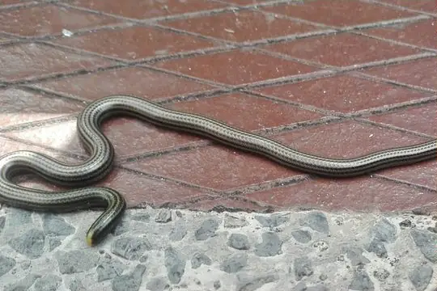
Black Blind Snake (magnamaculata)Epictia magnamaculata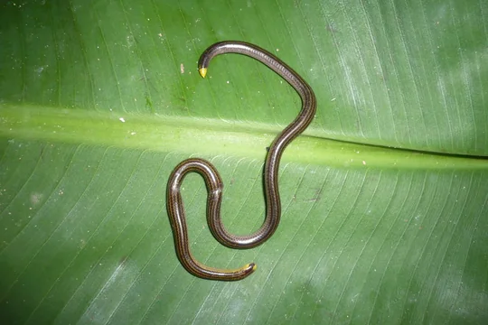
Common Peru Blind SnakeEpictia diaplocia- No photo yetDark Blind SnakeEpictia melanura
- No photo yetEleven-striped Blind SnakeEpictia undecimstriata
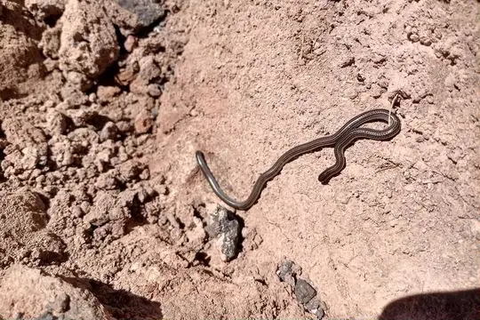
Freiberg's Blind SnakeEpictia australis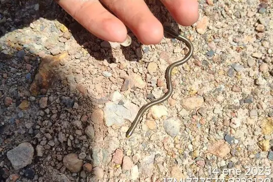
García's Blind SnakeEpictia antoniogarciai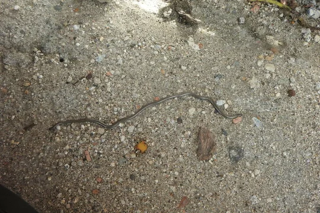
Goudot's Black Blind SnakeEpictia goudotii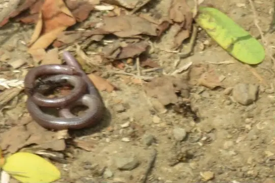
Guayaquila Blind SnakeEpictia guayaquilensis Guyana Blind SnakeEpictia tenella
Guyana Blind SnakeEpictia tenella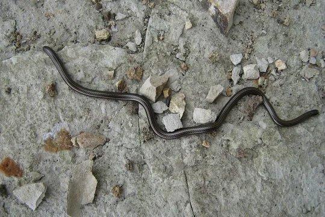
Klauber's Blind SnakeEpictia subcrotilla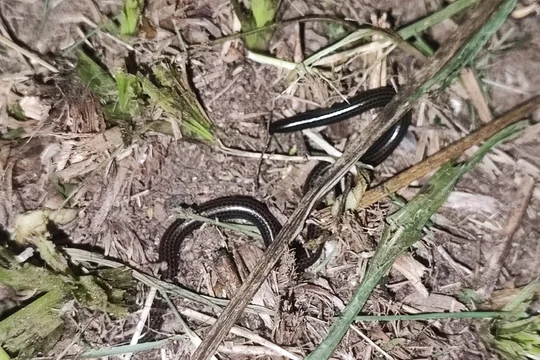
Pantanal ThreadsnakeEpictia vellardi- No photo yetPeru Blind SnakeEpictia peruviana
- No photo yetRed-lined Blind SnakeEpictia rubrolineata
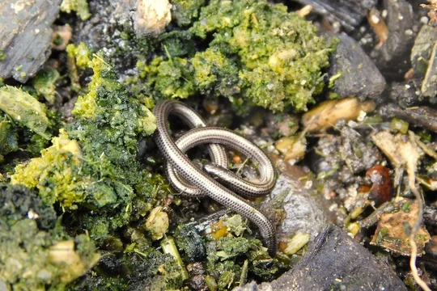
Rio Grande do Sul Blind SnakeEpictia munoai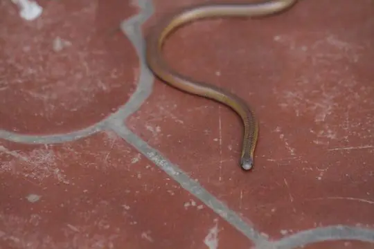
Rose Blind SnakeEpictia rufidorsa San Salvador Blind SnakeEpictia columbi
San Salvador Blind SnakeEpictia columbi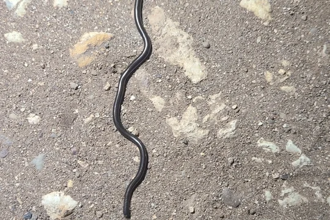
Slender ThreadsnakeEpictia phenops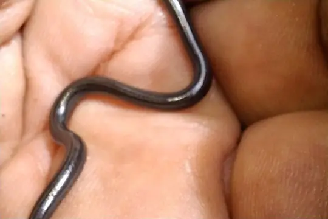
South American Blind Snake (amazonica)Epictia amazonica- No photo yetSouth American Blind Snake (signata)Epictia signata
- No photo yetTeague's Northern Blind SnakeEpictia teaguei
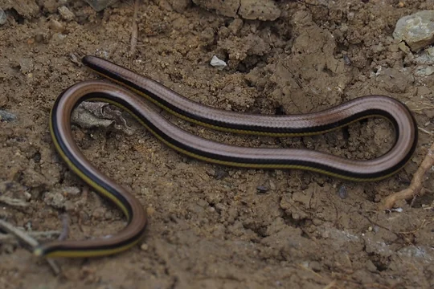
Three-colored Blind SnakeEpictia tricolor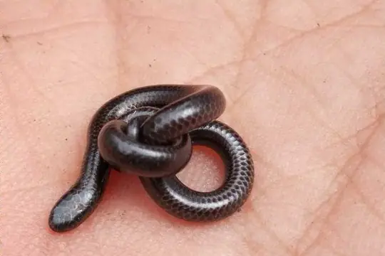
Tschudi's Blind SnakeEpictia tesselata Tucuman ThreadsnakeEpictia albipuncta
Tucuman ThreadsnakeEpictia albipuncta- No photo yetUnicolored Thread SnakeEpictia unicolor
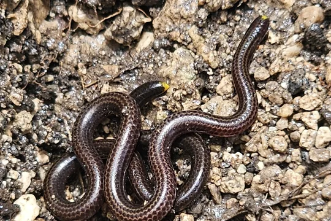
Vindum's Worm SnakeEpictia vindumi Wagler's Blind SnakeEpictia albifrons
Wagler's Blind SnakeEpictia albifrons- No photo yetEpictia alfredschmidti
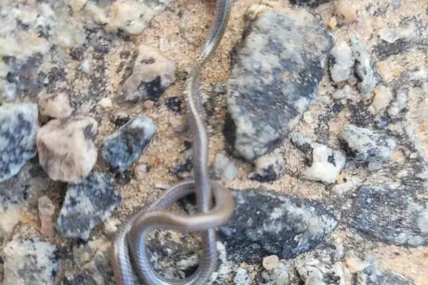
Epictia borapeliotes- No photo yetEpictia clinorostris
- No photo yetEpictia hobartsmithi
- No photo yetEpictia martinezi
- No photo yetEpictia pauldwyeri
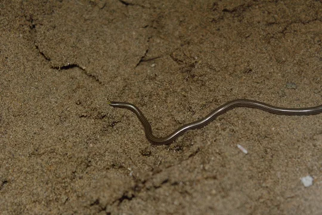
Epictia resetari- No photo yetEpictia rioignis
- No photo yetEpictia schneideri
- No photo yetEpictia septemlineata
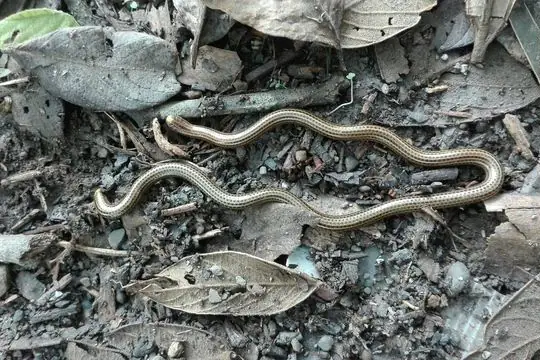
Epictia striatula- No photo yetEpictia vanwallachi
- No photo yetEpictia venegasi
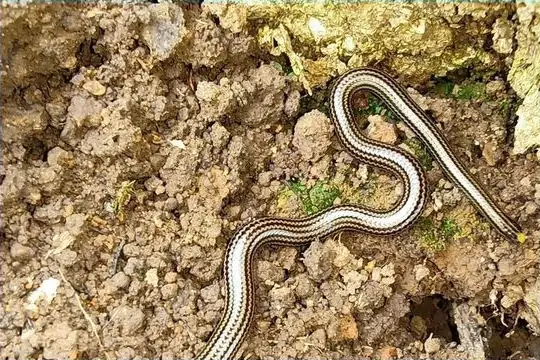
Epictia vonmayi- No photo yetEpictia wynni
No snakes in Epictia match.
About the genus Epictia
- Distribution: living species recorded in 21 countries (+1 territory), on 3 continents: Asia, North America, South America.
- Family: Leptotyphlopidae.
- Countries and territories: Argentina, Bahamas, Bolivia, Brazil, China, Colombia, Costa Rica, Ecuador, El Salvador, French Guiana, Guatemala, Guyana, Honduras, Mexico, Nicaragua, Panama, Paraguay, Peru, Suriname, Trinidad and Tobago, Uruguay, Venezuela.
Compare its species
Its living species side by side. Lengths come only from SnakeList’s reviewed, sourced accounts; the others are left blank rather than guessed.
Show the table of all 44 species
| Species | Venom | Recorded in | Adult length (reviewed accounts) |
|---|---|---|---|
| Bakewell's Blind Snake Epictia bakewelli | Non-venomous | 1 country (North America) | No reviewed account yet |
| Black Blind Snake (ater) Epictia ater | Non-venomous | 6 countries (Asia, North America) | No reviewed account yet |
| Black Blind Snake (fallax) Epictia fallax | Non-venomous | 1 country (South America) | No reviewed account yet |
| Black Blind Snake (magnamaculata) Epictia magnamaculata | Non-venomous | 2 countries (North America) | No reviewed account yet |
| Common Peru Blind Snake Epictia diaplocia | Non-venomous | 2 countries (South America) | No reviewed account yet |
| Dark Blind Snake Epictia melanura | Non-venomous | 1 country (South America) | No reviewed account yet |
| Eleven-striped Blind Snake Epictia undecimstriata | Non-venomous | 1 country (South America) | No reviewed account yet |
| Freiberg's Blind Snake Epictia australis | Non-venomous | 3 countries (South America) | No reviewed account yet |
| García's Blind Snake Epictia antoniogarciai | Non-venomous | 1 country (South America) | No reviewed account yet |
| Goudot's Black Blind Snake Epictia goudotii | Non-venomous | 2 countries (South America) | No reviewed account yet |
| Guayaquila Blind Snake Epictia guayaquilensis | Non-venomous | 1 country (South America) | No reviewed account yet |
| Guyana Blind Snake Epictia tenella | Non-venomous | 5 countries (+1 territory) (South America) | No reviewed account yet |
| Klauber's Blind Snake Epictia subcrotilla | Non-venomous | 2 countries (South America) | No reviewed account yet |
| Pantanal Threadsnake Epictia vellardi | Non-venomous | 3 countries (South America) | No reviewed account yet |
| Peru Blind Snake Epictia peruviana | Non-venomous | 1 country (South America) | No reviewed account yet |
| Red-lined Blind Snake Epictia rubrolineata | Non-venomous | 1 country (South America) | No reviewed account yet |
| Rio Grande do Sul Blind Snake Epictia munoai | Non-venomous | 3 countries (South America) | No reviewed account yet |
| Rose Blind Snake Epictia rufidorsa | Non-venomous | 1 country (South America) | No reviewed account yet |
| San Salvador Blind Snake Epictia columbi | Non-venomous | 1 country (North America) | No reviewed account yet |
| Slender Threadsnake Epictia phenops | Non-venomous | 4 countries (North America) | No reviewed account yet |
| South American Blind Snake (amazonica) Epictia amazonica | Non-venomous | 2 countries (South America) | No reviewed account yet |
| South American Blind Snake (signata) Epictia signata | Non-venomous | 2 countries (South America) | No reviewed account yet |
| Teague's Northern Blind Snake Epictia teaguei | Non-venomous | 1 country (South America) | No reviewed account yet |
| Three-colored Blind Snake Epictia tricolor | Non-venomous | 1 country (South America) | No reviewed account yet |
| Tschudi's Blind Snake Epictia tesselata | Non-venomous | 1 country (South America) | No reviewed account yet |
| Tucuman Threadsnake Epictia albipuncta | Non-venomous | 9 countries (+1 territory) (South America) | No reviewed account yet |
| Unicolored Thread Snake Epictia unicolor | Non-venomous | No country recorded (South America) | No reviewed account yet |
| Vindum's Worm Snake Epictia vindumi | Non-venomous | 1 country (North America) | No reviewed account yet |
| Wagler's Blind Snake Epictia albifrons | Non-venomous | 8 countries (+1 territory) (South America) | No reviewed account yet |
| Epictia alfredschmidti | Non-venomous | 1 country (South America) | No reviewed account yet |
| Epictia borapeliotes | Non-venomous | 1 country (South America) | No reviewed account yet |
| Epictia clinorostris | Non-venomous | 1 country (South America) | No reviewed account yet |
| Epictia hobartsmithi | Non-venomous | 1 country (South America) | No reviewed account yet |
| Epictia martinezi | Non-venomous | 1 country (North America) | No reviewed account yet |
| Epictia pauldwyeri | Non-venomous | 1 country (North America) | No reviewed account yet |
| Epictia resetari | Non-venomous | 1 country (North America) | No reviewed account yet |
| Epictia rioignis | Non-venomous | 1 country (North America) | No reviewed account yet |
| Epictia schneideri | Non-venomous | 1 country (North America) | No reviewed account yet |
| Epictia septemlineata | Non-venomous | 1 country (South America) | No reviewed account yet |
| Epictia striatula | Non-venomous | 4 countries (South America) | No reviewed account yet |
| Epictia vanwallachi | Non-venomous | 1 country (South America) | No reviewed account yet |
| Epictia venegasi | Non-venomous | 1 country (South America) | No reviewed account yet |
| Epictia vonmayi | Non-venomous | 1 country (South America) | No reviewed account yet |
| Epictia wynni | Non-venomous | 1 country (North America) | No reviewed account yet |